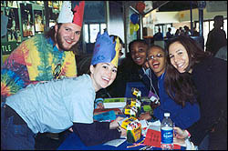
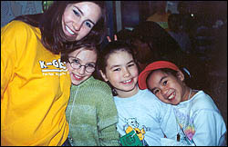

|
|
|
|
| "Thank you so, so, so, so, so, so, so, so, so, so, so, so, so, so, so, so, so, so, so, so, so, so, so, so, so, so, so, so, so, so, so, so, so, so, so, so, so, so, so, so, so much for organizing and inviting us to the Kids-Fair. I so totally loved it! It was so much fun! My favorite part was when I got to meet my pen pal. She is so nice." | ||
| "I enjoyed the Fair very very very very very very very very very much!" | ||
| "I thank you again for making that fantastic celebration happen. It was astounding how many games you had for us. I especially liked the dancing game. I also simply loved the theme. I will have memories that will last a lifetime." | ||
| "Thank you so, so, so, so, so, so, so, so, so, so, so, so, so, so, so, so, so, so, so, so much! I had so, so, so much fun :) I loved the South Korea place where we dance on the mats and watch the sights on tv. My least favorite part was having to leave. I hope you have the Kids-Fair for many more years. I will never forget today." |
 |
|
| "Thank you for everything! I had so much fun! I wish I could come back again! Thank you for having us at the Kids-Fair. It was so much fun to meet my K-gram. I enjoyed it very much!" | ||
| "I had a great time at Kids-Fair I hope you did too! Especially when my K-gram came...Me and my pen pal had the most funiest time ever! I hope I can see her again!" | ||
|
 |
"Thank you for allowing us to come to the Kids-Fair. I had the best time at the Kids-Fair that I have had in a very long time. My favorite part of the Kids-Fair was meeting my pen pal and having my fingers bandaged... I wish every field trip were as cool as the Kids-Fair!" | |
| "I really enjoyed the Kids-Fair! Your theme and creative crafts were so cool! It must have taken you a lot of time and organizing to make it so special. One of my favorite parts of it was being with my K-gram, Priya. She had sacrificed her whole day to be with me! Wasn't that nice of her? Although some K-grams couldn't make it, all my classmates have received and treasured the wonderful letters from them. Thank You K-grams! We really appreciated this grand event you made for us!" | ||
| "Thank you for organizing that STUPENDOUS CELEBRATION!!! We had a great time. I mean it ... seriously ... without a dought ..." | ||